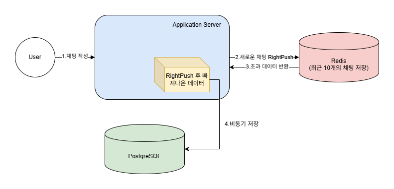
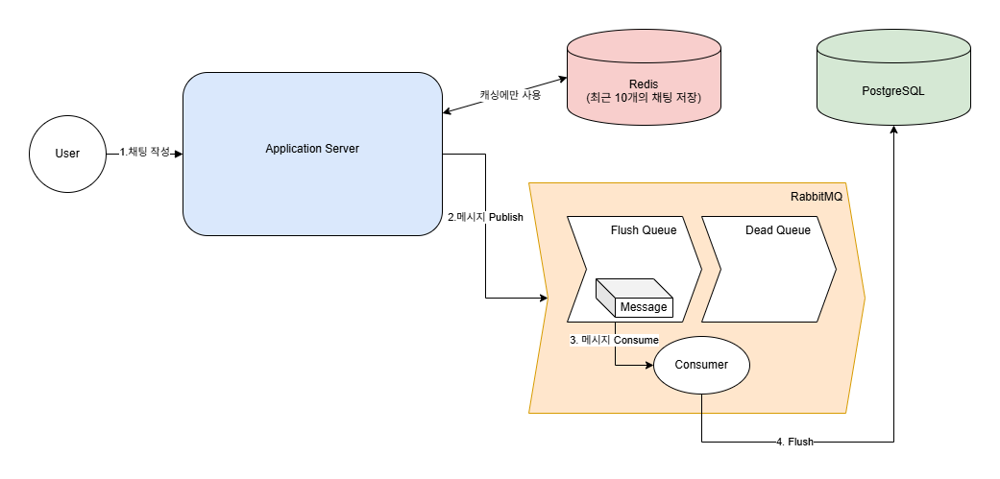
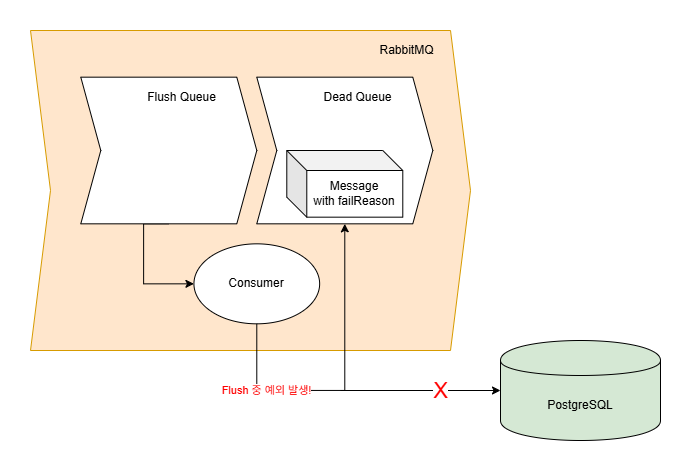

채팅 저장을 Redis list에 의존하던 구조의 한계를 인식하고, RabbitMQ 기반의 신뢰성 있는 저장 파이프라인으로 개선한 사례입니다.

AI 채팅 기능의 원활한 대화를 위해서 이전 채팅 기록을 같이 조회해서 전달해야 했습니다.
초기에는 성능 향상을 위해 DB 접근을 최소화하는 데 초점을 맞추어서 고려했고, 단순히 Redis의 List 자료구조를 사용하였습니다.
흐름은 다음과 같습니다.
결론적으로 Redis List를 캐싱에 사용할 수 있지만, 저장하기 위한 용도로 사용하면 안된다는 것을 알게 되었습니다.
안전하게 채팅을 저장할 수 있는 방법을 생각해야 했습니다. 이를 위해 두 가지를 우선적으로 생각했습니다.
최근 채팅의 캐싱을 위해 Redis List는 그대로 사용하기로 결정하였습니다. 한정된 자원에서 최대한의 기능을 사용하기 위해 Redis에서 사용할 수 있는 기능에 대해서 검토하였습니다.
Pub/Sub에서는 subscriber가 메시지를 수신하지 못할 경우 데이터가 유실되는 문제가 있었고, 메시지 처리에 대한 ACK 및 재처리 메커니즘이 존재하지 않았습니다. 채팅 데이터의 유실을 방지하기 위해 Redis의 Pub/Sub 모델은 후보에서 제외되었습니다.
Streams는 append-only 로그 구조를 기반으로 메시지를 저장합니다. 가장 큰 특징으로 메시지가 소비된 이후에도 삭제되지 않고 유지된다는 점이 있습니다. 이러한 구조로 인해서 데이터를 재 처리 할 수 있었으며, Pub/Sub과 달리 메시지 유실을 방지할 수 있었습니다. 하지만 이 Streams의 메시지를 소비한 이후에도 유지한다는 점이 제가 구현하려는 방향과 맞지 않았습니다. 채팅 데이터를 “저장”하는 것보다 “처리”한다는 목적이 컸기에 처리가 완료되면 데이터를 가지고 있을 필요가 없었습니다.
메시지의 전달의 신뢰성과 처리 보장, 처리를 완료하면 데이터를 제거, 실패하더라도 재시도 할 수 있는 구조를 모두 만족하는 것으로 RabbitMQ를 선택하게 되었습니다.

데이터의 무결성을 위해 채팅의 유실을 반드시 막을 수 있는 구조로 설계가 필요했습니다. 이를 위해 At-Least-Once 방식을 채택하고, Dead Queue를 도입하였습니다.
메시지의 중복을 허용하되, 적어도 한번은 처리가 되도록 보장하는 방식을 사용하였습니다.
최대 한번 전달하는 At-Most-Once와 정확히 한번 전달하는 Exactly-Once 방식이 있었지만, 메시지의 유실과 구현 복잡도 관점에서 At-Least-Once 방식이 적합하다고 판단하였습니다.
Publisher 측에서는 Publisher Confirm을 적용해 브로커가 메시지를 정상 수신했을 때만 성공으로 처리하고, 실패 시 재시도 로직 실행 후 fallback으로 직접 DB에 저장하게 됩니다. Consumer 측에서는 Manual Ack를 적용해 처리 완료 후에만 ACK를 전송하도록 구성하였습니다.
채팅 데이터의 PK는 변하지 않는 값이므로 consumer에서 데이터베이스로 UPSERT를 하도록 설계한다면 중복 저장을 방지할 수 있었습니다.

Consumer가 Flush Queue에 쌓인 메시지를 처리하는 도중 예외가 발생한다면, 채팅이 유실될 가능성이 있었습니다. 이를 방지하기 위해 Dead Queue를 도입하였습니다.
Dead Queue에 쌓인 메시지를 DB로 옮길 수 있는 구조로 데이터의 무결성을 보장할 수 있습니다.
성능도 중요하지만 데이터의 유실을 방지할 수 있는 구조가 안정성을 위해서는 우선이라는 것을 깨달았습니다.
기존에는 단일 애플리케이션 내에서 데이터를 직접 처리하는 구조를 사용했지만, 이는 분산 환경에서 여러 한계를 가집니다.
첫째, 데이터 유실이 발생했을 경우 이를 추적하기 어렵습니다.
둘째, 애플리케이션 내부 스케줄러가 중복 실행될 경우 데이터가 중복 저장될 위험이 있습니다.
이러한 문제를 해결하기 위하여 데이터 저장 책임을 MQ에 위임했습니다. 이를 통해 분산 환경에서도 안정적으로 데이터를 처리할 수 있는 구조를 구성했습니다.
또한 Dead Queue를 도입하여 처리에 실패한 메시지를 저장하고 이를 기반으로 유실 데이터를 복구할 수 있도록 개선했습니다.
결과적으로 데이터 처리의 신뢰성과 복구 가능한 구조로 변경하여 전체 시스템의 안정성을 향상시킬 수 있었습니다.